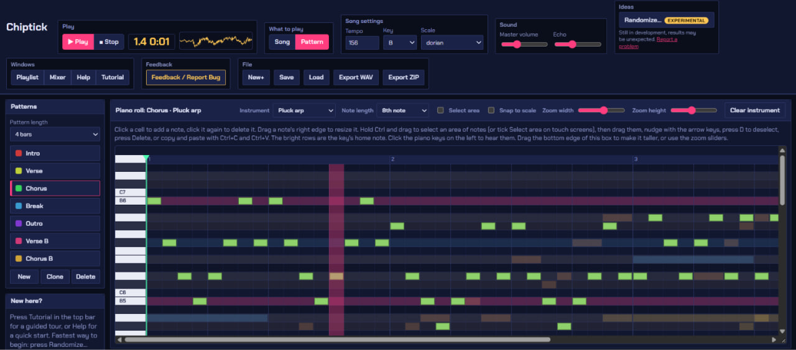
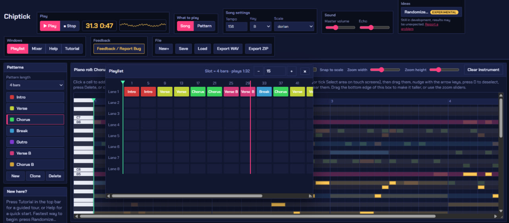
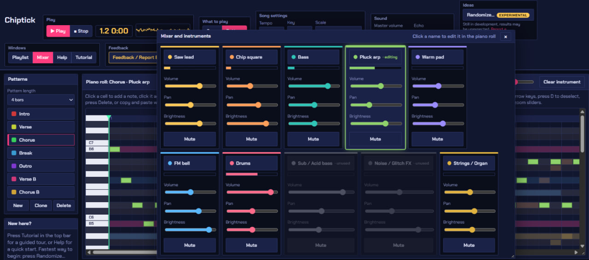
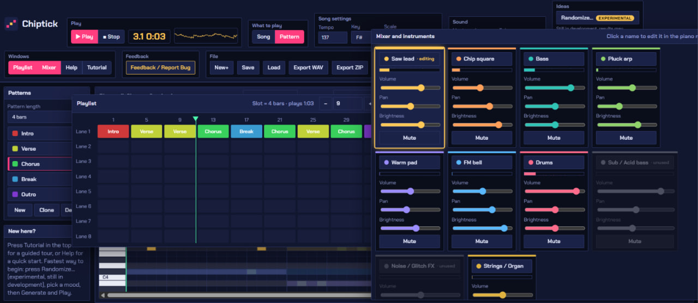

Make chiptune music in your browser.
Chiptick is a small studio for retro game music. Draw notes, stack drums, bass and melody, arrange your song and export it. Free, no sign-up, nothing to install.
Make music!Works on desktop. Your songs are saved in your browser.
Try a beat
Click the squares to add or remove notes. This is a tiny taste of the real thing.
See inside the studio
Every part is hands-on: click to place notes, drag to arrange, slide to mix.

Add your screenshot as
screenshots/piano-roll.png
screenshots/piano-roll.png

Add your screenshot as
screenshots/playlist.png
screenshots/playlist.png

Add your screenshot as
screenshots/mixer.png
screenshots/mixer.png

Add your screenshot as
screenshots/generator.png
screenshots/generator.png
Click a screenshot to view it full size. Use the arrow keys or swipe to move between them.
What you get
Everything you need to go from an empty screen to a finished tune.
- Retro instrumentsLead, bass, drums, organ, bell, pluck and effects, all made in the browser.
- Piano rollDraw notes, drag to resize, select areas, copy and paste.
- PlaylistArrange short patterns into a complete song.
- Mixer and echoBalance every instrument and add a little echo.
- Song generatorGet a starting song fast, then change any note.
- Save and exportSave your project, or export as WAV or ZIP.